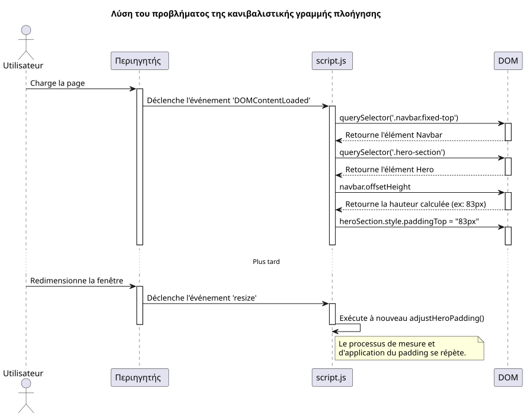
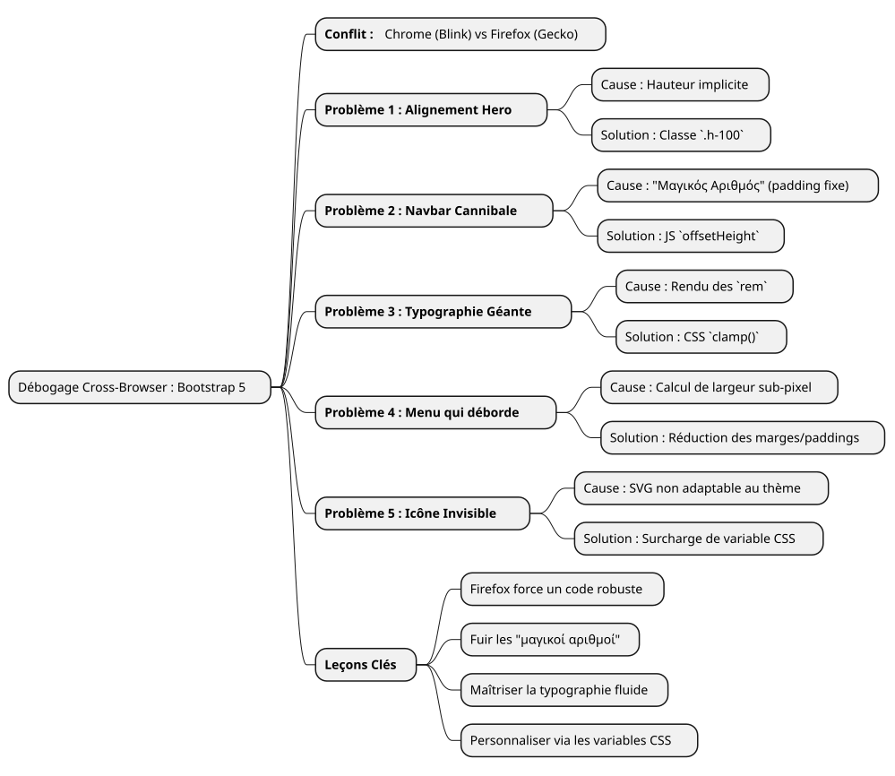

Αφήγηση одного αποσφαλμάτωσης: να ελέγχουμε τις εκράσεις του Firefox με το Bootstrap 5
Publié le 14 July 2025
- Το πεδίο μάχης: ένα μοντέλο, τρεις περιηγητές, muitas αποδόσεις
- Η πτενή κάρτα του τμήματος "Hero
- Πρόβλημα 2: Η μπάρα πλοήγησης κανίβαλη
- Πρόβλημα 3 : Η αναρχική τυπογραφία
- Πρόβλημα 4 : Η γραμμή πλοήγησης που υπερβαίνει το πλαίσιο
- Πρόβλημα 5: Το αόρατο μενού hamburger
- Συμπέρασμα: τα μαθήματα από την εντονή αποσφαλμάτωση
|
Διάβασμα : περίπου 7 λεπτά Επίπεδο : Μέσα |
Σε αυτή τη λεπτομερή πρακτική μελέτη, θα αναλύσουμε τα πιο συνηθισμένα και μερικές φορές ενοχλητικά προβλήματα συμβατότητας προγραμμάτων περιήγησης που συναντώνται κατά τη δημιουργία ενός UI mockup με το Bootstrap 5.2. Από τη διαχείριση Flexbox έως την λεπτομέρεια της απεικόνισης των γραμματοσειρών, ανακαλύψτε τη διαδικασία μας αποσφαλμάτωσης για να μετατρέψετε ένα ασταθές σχέδιο υπό Firefox σε μια pixel‑perfect εμπειρία σε όλους τους φυλλομετρητές.
Το πεδίο μάχης: ένα μοντέλο, τρεις περιηγητές, muitas αποδόσεις
Κάθε προγραμματιστής front-end ξέρει αυτή τη νιώθη. Μετά από ώρες εργασίας, το mockup είναι τελείως τέλειο. Οι ευθυγραμμικοί είναι ακριβείς, η τυπογραφία είναι ελκυστική, οι κινήσεις είναι ομαλές. Αναπνέει με ικανοποίηση, θαυμάζει τη δουλειά του στο Chrome (ή Brave, ή Edge), και, από συνείδηση, ανοίγει το project στο Firefox. Και εκεί, είναι το θεατρό. Στοιχεία που παρέρχονται, σπασμένες ευθυγραμμίσεις, γραμματοσειρές με ανταρακτικά μεγέθη… η ωραία αρμονία έχει πετάξει.
Αυτό είναι ακριβώς το σενάριο που αντιμετωπίσαμε κατά την ανάπτυξη μιας νέας διεπαφής φολιοντό. Το ζητούμενο ήταν απλό: μια σύγχρονη, responsive αρχική σελίδα, με ένα επιλογέα θεμάτων (φωτεινό, σκουρό, υψηλής αντίθεσης), χρησιμοποιώντας vanilla JavaScript και την τελευταία έκδοση του Bootstrap 5.2.
Αυτό το άρθρο δεν είναι μια λίστα με θαυμαστικές λύσεις. Είναι το ημερολόγιο της συνεδρίας debugging μας, μια βουτιά στο «γιατί» των διαφορών απόδοσης μεταξύ των μηχανών Blink (Chromium, Brave) και Gecko (Firefox), και η επίδειξη ότι οι ισχυρές και σύγχρονες λύσεις είναι πάντα καλύτερες από τα γρήγορα επιθέματα.
Η πτενή κάρτα του τμήματος "Hero
Ο πρώτο σφάλμα ήταν επίσης το πιο ορατό. Η ενότητα καλωσορίσματος (« hero ») αποτελείται από δύο στήλες: αριστερά, ο κύριος τίτλος; δεξιά, μια κάρτα παρουσίασης.
-
Το συμπτώμα :Στο Chrome και Brave, οι δύο στήλες ήταν τέλεια κατακεντρωμένες κάθετα. Στο Firefox, η κάρτα της δεξιάς πέφτε ανεξήγητα κάτω από το κείμενο της αριστεράς.
-
Η έρευνα:Ο κώδικας HTML φαινόταν ωστόσο απλός και σωστός, χρησιμοποιώντας τις πρότυπες κλάσεις του Bootstrap.
<section id="home" class="hero-section">
<div class="container">
<!-- Cette ligne est la clé du problème -->
<div class="row align-items-center min-vh-100">
<div class="col-lg-6">
<!-- Contenu de gauche -->
</div>
<div class="col-lg-6">
<!-- Carte de droite -->
</div>
</div>
</div>
</section>Το προσαρμοσμένο μας CSS για`.hero-section`όριζε`display: flex` et align-items: center, και η κλάση`min-vh-100`έδινε καλά ένα ελάχιστο ύψος στη γραμμή (div.row). Έτσι, γιατί ο Firefox αρνούσέ να κεντράρει τις στήλες;
-
Η βαθιά αιτία :Αυτό είναι ένα κλασικό παράδειγμα για τον τρόπο που οι μηχανismes Darstellung ερμηνεύουν τα ενσωματωμένα υψόμετρα. Η`<section>`είχε ένα`min-height`, αλλά όχι`height`Εξακριβής. Για να εφαρμόσετε`align-items-center`έσω του`div.row`, Το Firefox χρειάζεται να ξέρει την υψότητα αναφοράς αυτού του κοντέινερ. Ως οι γονείς του (
div.containeret la<section>(αυτή) δεν είχαν ύψοςκατάστημη, Το Firefox είχε χαθεί. Ο μηχανισμός Blink, πιο επιτρεπτικός, επιτυγχάνει να "μαντεύει" την πρόθεση και να κεντροποιεί τα στοιχεία. Το Gecko, πιο πιστό στην προδιαγραφή, δεν το κάνει. -
Η λύση :Κάνετε το ύψος ρητό. Έχουμε βιάσει τον.
.containeret le `.row`να καταλαμβάνουν 100% του ύψους του αντίστοιχου γονέα τους χρησιμοποιώντας την βοηθητική κλάση`h-100`του Bootstrap.
<section id="home" class="hero-section">
<div class="container h-100">
<div class="row align-items-center min-vh-100 h-100">
<!-- ... -->
</div>
</div>
</section>|
�Όταν ένα`align-items`Το Flexbox δεν λειτουργεί όπως αναμένεται στον άξονα Y, ελέγξτε πάντα ότι το κοντέινερ έχει ύψος ( |
Πρόβλημα 2: Η μπάρα πλοήγησης κανίβαλη
-
Το σύμπτωμα: Le `padding`ήταν επαρκές στο Chrome, αλλά όχι στο Firefox, όπου ο τίτλος ήταν πάντα μερικώς κρυμμένος.
-
Η αιτία βαθιά:Η χρήση ενός "μαγικού αριθμού" (
80px) είναι μια πολύ κακή πρακτική. Το ύψος ενός στοιχείου όπως μια γραμμή πλοήγησης μπορεί να ποικίλει σε μερικούς pixel από έναν περιηγητή σε άλλον λόγω λεπτών διαφορών στην απόδοση των γραμματοσειρών, των διαστημάτων ή ακόμα και των ρυθμίσεων του χρήστη. Η εμπιστοσύνη σε μια σταθερά τιμή είναι η συνταγή για ένα ευαίσθητο σχέδιο. -
Η λύση:Μια δυναμική και απρόσκοπη λύση σε JavaScript. Έχουμε γράψει ένα μικρό script για :
-
Μετρήστε το ύψος πραγματική της γραμμής πλοήγησης μετά από την εμφάνιση της σελίδας.
-
Εφαρμόστε αυτό το μετρημένο ύψος ως`padding-top`στήν ενότητα "Hero
-
Εκτελέστε ξανά αυτή τη συνάρτηση κάθε φορά που αλλάζει το μέγεθος του παραθύρου για να προσαρμόζεται στις αλλαγές (όπως η μετάβαση στο μενού αγκαλιού).
document.addEventListener('DOMContentLoaded', function() {
function adjustHeroPadding() {
const navbar = document.querySelector('.navbar.fixed-top');
const heroSection = document.querySelector('.hero-section');
if (navbar && heroSection) {
const navbarHeight = navbar.offsetHeight;
heroSection.style.paddingTop = navbarHeight + 'px';
}
}
// Ajuster au chargement et au redimensionnement
adjustHeroPadding();
window.addEventListener('resize', adjustHeroPadding);
});
Παράλληλα, φυσικά, αφαιρέσαμε τον κανόνα.padding-top: 80px;`του αρχείου μας`styles.css.
Πρόβλημα 3 : Η αναρχική τυπογραφία
-
Το σύμπτωμα :Στον Firefox, η γραμματοσειρά του tituló «Δημιουργός Εκπαιδευτής…» ήταν τεράστια, σχεδόν σοκαριστική, ενώ στους υπόλοιπους περιηγητές ήταν αρμονική.
(Note: I kept the typographic quotes as in the source; if straight single quotes are preferred, they can be swapped accordingly.)
-
Η βαθύτατη αιτία :Ο τίτλος χρησιμοποίησε μια κλάση`display-4`του Bootstrap. Αυτές οι κλάσεις χρησιμοποιούν ανταποκρινόμενες μεγέθειες γραμματοσειρών, συχνά βασισμένες στην μονάδα`rem`Και των media queries. Μια φορά ακόμα, ο αλγόριθμος απόδοσης του Firefox, συνδυασμένος με τη γραμματοσειρά "Inter", έπέφερε σε έναν υπολογισμό μεγέθους πολύ μεγαλύτερο στην ανάλυση 1920x1080.
-
Η λύση :Ανάκτηση του ελέγχου με τη συνάρτηση CSS`clamp()
Αυτή η λειτουργία είναι μια επανάσταση για τη ροή τύπογραφίας. Επιτρέπει να οριστεί ένα μέγεθος γραμματοσειράς με τιμές: ένα ελάχιστο μέγεθος, ένα "προτιμημένο" μέγεθος ( που προσαρμόζεται στο πλάτος της οθόνης,`vw), και ένα μέγιστο μέγεθος.
.hero-content h1 {
color: var(--text-primary);
line-height: 1.2;
/*
Min: 2rem
Préférée: s'adapte à la vue
Max: 2.5rem (40px)
*/
font-size: clamp(2rem, 1.2rem + 1.5vw, 2.5rem);
}με`clamp(), ημπορέμε να πούμε στον περιηγητή: "Μεγάλε την γραμματοσειρά με την οθόνη, αλλά μην υπερβείςποτέτο όριο του`2.5rem. Αυτό ενοποίησε αμέσως την εμφάνιση σε όλους τους φυλλομετρητές, μας δώνοντας τον πλήρη έλεγχο στην τελική αισθητική.
Πρόβλημα 4 : Η γραμμή πλοήγησης που υπερβαίνει το πλαίσιο
-
Το σύμπτωμα:Σε οθόνη 1920x1080, τα τελευταία σύνδεσμοι του μενού ("Blog", "Contact") έπεσαν εκτός της οθόνης προς τη δεξιά, αλλά μόνο στον Firefox.
-
Η βαθύτατη αιτία:μετά από πολλές αποτυχημένες προσπάθειες (αλλαγή των σημείων διάσπασης του Bootstrap de`lg` à
xl`τότε`xxl), καταλάβαμε. Η αιτία δεν ήταν η λογική του Bootstrap, αλλά ένα απλός υπολογισμός πλάτους. Στο Firefox, το άθροισμα των πλάτους όλων των συνδέσμων, συμπεριλαμβανομένων των`padding` et `margin`με ακρίβεια sub-pixel, ήταν ελαφρώς μεγαλύτερη από 1920 pixel. Στον Chrome, αυτή η ίδια ποσότητα ήταν ελαφρώς μικρότερη. Λείγανε μα λίγα pixel. -
Η λύση :Μια χειρουργική μείωση των διαστημάτων. Επειδή ήταν εκτός ερώτησης να στοχεύσουμε ειδικά το Firefox με παρωχημένα CSS "hacks", η μόνη καθαρή λύση ήταν να βρούμε έναν κοινό στυλ που λειτουργεί παντού. Έτσι, μειώσαμε ελαφρώς τις περιθώρια και το padding οριζόντιο καθενού συνδέσμου πλοήγησης.
/* La version finale, légèrement plus compacte */
.navbar-nav .nav-link {
font-size: 0.9rem; /* 90% de la taille de base */
color: var(--text-primary) !important;
font-weight: 500;
margin: 0 0.2rem;
padding: 0.5rem 0.5rem !important;
border-radius: 0.375rem;
transition: all 0.3s ease;
}Αυτή η μείωση, σχεδόν αόρατη στον οπτικό αισθητή σε ένα στοιχείο, μας έδωσε το απαραίτητο χώρο ώστε να μπορούν όλοι οι σύνδεσμοι να χωρέσουν στο πλαίσιο του Firefox, διατηρώντας σχεδόν την ίδια εμφάνιση και στους υπόλοιπους περιηγητές.
Πρόβλημα 5: Το αόρατο μενού hamburger
-
Το σύμπτωμα :Στον ανταποκρισιμό τρόπο (menu "hamburger"), το εικονίδιο του μενού ήταν αόρατο στους θεματικούς "dark" και "high-contrast".
-
Η βαθιά αιτία:Το εικονίδιο του μενού του Bootstrap 5 είναι ένα`background-image`(ένας SVG που έχει κωδικοποιηθεί σε URL). Προεπιλογής, το χρώμα της γραμμής του είναι σκούρο, βελτιστοποιημένο για φωτεινό υπόβαθρο. Δεν προσαρμόζεται αυτόματα στην αλλαγή του θέματος.
-
Η λύση:Χρησιμοποιήστε τις μεταβλητές CSS του Bootstrap για να υπερκαλυπτήσετε το εικονίδιο. Ορίσαμε ένα νέο εικονίδιο SVG, αλλά desta φορά με μια λευκή γραμμή (
#ffffff), και το εφαρμόσαμε συγκεκριμένα όταν τα θέματα`dark` ou `high-contrast`είναι ενεργοί.
/* ======================
Fix pour l'icône du menu Burger (Blanc)
====================== */
[data-bs-theme="dark"] .navbar-toggler-icon,
[data-bs-theme="high-contrast"] .navbar-toggler-icon {
--bs-navbar-toggler-icon-bg: url("data:image/svg+xml,%3csvg xmlns='http://www.w3.org/2000/svg' viewBox='0 0 30 30'%3e%3cpath stroke='%23ffffff' stroke-linecap='round' stroke-miterlimit='10' stroke-width='2' d='M4 7h22M4 15h22M4 23h22'/%3e%3c/svg%3e");
}|
Η προσαρμογή των συστατικών του Bootstrap όπως αυτό γίνεται περισσότερο και περισσότερο μέσω της υποκατάστασης μεταβλητών CSS ( |
Συμπέρασμα: τα μαθήματα από την εντονή αποσφαλμάτωση
Αυτή η διαδρομή, αν και μερικές φορές απογοητευτική, είναι πλούσια σε διδασκαλίες. Κάθε λυμένο πρόβλημα ενισχύει μια θεμελιώδη αλήθεια του ιστού :Κανένας δεν αντικαθιστά μια αυστηρή δοκιμή πολλαπλών περιηγητών.

-
Firefox είναι ένας σύμμαχος :Η μεγαλύτερη της πιστότητα στα πρότυπα CSS μας υποχρεώνει να γράφουμε έναν κώδικα που είναι πιο ανθεκτικό και λιγότερο ασαφής.
-
Αποφύγετε τους "αριθμούς μαγικός" :Οι σταθερές τιμές (όπως`padding-top: 80px`) είναι βόμβες με χρονόζυγο. Προτιμήστε πάντα δυναμικές λύσεις (JavaScript) ή σχετικές (Flexbox, Grid).
-
Αποκτήστε έλεγχο στη τυπογραφία σας:Χρησιμοποιείτε`clamp()`για πλήρη έλεγχο του μεγέθους των ανταποκρινόμενων γραμματοσειρών
-
Σκέψτε σε "συστατικά" :Για να προσαρμόζετε το Bootstrap, αντικαταστήστε τις μεταβλητές CSS του αντί να πολλαπλασιάζετε τους κανόνες που τον υπερισχύουν.
-
Μην στοχεύετε σε έναν περιηγητή:Η λύση είναι σχεδόν ποτέ να κάνεις ένα "hack" για έναν συγκεκριμένο φυλλομετρητή, αλλά να βρεις ένα κοινό στυλ που λειτουργεί παντού.
Τελικά, το πρωτότυπο είναι τώρα σταθερό, προβλέψιμο και έτοιμο να ενσωματωθεί σε ένα σύστημα προτύπων. Κάθε διορθωμένο bug δεν ήταν αποτυχία, αλλά ένα βήμα προς έναν κώδικα καλύτερης ποιότητας.